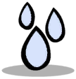
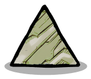
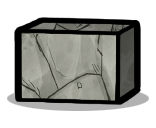
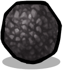
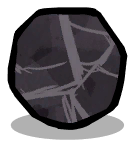
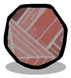

Elements¶
Enabling this mod in the config will add several new elements to the game or reenable disabled vanilla ones.
A few of them will also be added to the starmap pois for mining or spawn during worldgen.
New Element Categories¶
| Material | Elements | |
|---|---|---|
| Carrier Gas |
Carrier Gases are inert or semi-inert gases that are used in plasma related processes. | Helium Hydrogen Gas Hydrogen GasNitrogen |
| Hardened Alloy |
Hardened Alloys are a fusion of two or more materials. Their high material strength allows them to be used as a substitute to Steel. |
 Phosphor Bronze Phosphor Bronze Permendur PermendurPlasteel Neutronium Alloy |
| Metallic Sand |
Sandy materials composed of a various number of metallic grains |  Base-Grade Metallic Sand Base-Grade Metallic Sand Low-Grade Metallic Sand Low-Grade Metallic Sand High-Grade Metallic Sand High-Grade Metallic Sand |
New Elements¶
Ammonia¶
(NH3) Ammonia is an inorganic compound of nitrogen and hydrogen. A stable binary hydride, and the simplest pnictogen hydride, ammonia is a gas with a distinct pungent smell.
| Material Properties | ||
|---|---|---|
 |
Resource Type: Unbreathable Gas Condensation point: -33.6°C ->  Liquid Ammonia Properties: Gas |
Specific Heat Capacity: 2.175 (DTU/g)/ ºC Thermal Conductivity: 0.507 (DTU/(m*s))/ ºC Radiation Absorption Factor: 0.3 Radiation Emission/1000kg: 0 rads/cycle |
Ammonia Snow¶
(NH3) Ammonia is an inorganic compound of nitrogen and hydrogen, currently its its cold, solid state.
| Material Properties | ||
|---|---|---|
 |
Resource Type: Liquefiable Melting point: -77.73°C -> Liquid Ammonia Hardness: 2 Properties: Solid |
Specific Heat Capacity: 4.744 (DTU/g)/ ºC Thermal Conductivity: 0.507 (DTU/(m*s))/ ºC Radiation Absorption Factor: 0.5 Radiation Emission/1000kg: 0 rads/cycle |
Ammonium Water¶
(NH4OH) Ammonium hydroxide is a solution of Ammonia and Water.
| Material Properties | ||
|---|---|---|
 |
Resource Type: Liquid Freezing point: -58°C 11 % Ammonia,89 %  Ice IceEvaporation point: 38°C 89 %  Water, Water,11 % AmmoniaProperties: Mixture, Water Based |
Specific Heat Capacity: 4.500 (DTU/g)/ ºC Thermal Conductivity: 0.600 (DTU/(m*s))/ ºC Radiation Absorption Factor: 0.3 Radiation Emission/1000kg: 0 rads/cycle |
Base-Grade Metallic Sand¶
A heavy sandy material composed mostly of common metallic grains, mixed with other finer mineral particles.
| Material Properties | ||
|---|---|---|
|
Resource Type: Refined Mineral Melting point: 2249°C 58 %  Rock Gas, Rock Gas,42 %  Molten Slag Molten SlagHardness: 32 Properties: General Buildable, Metallic Sand, Ore, Solid, Uncrushable, Unstable |
Specific Heat Capacity: 8.660 (DTU/g)/ ºC Thermal Conductivity: 12.320 (DTU/(m*s))/ ºC Radiation Absorption Factor: 0.46 Radiation Emission/1000kg: 0 rads/cycle |
Borax¶
Borax, also known as sodium borate, is an important boron compound, mainly used in the manufacture of Fiberglass, and as a flux in metallurgy.
| Material Properties | ||
|---|---|---|
 |
Resource Type: Consumable Ore Melting point: 963°C ->  Molten Salt Molten SaltHardness: 1 Properties: Solid |
Specific Heat Capacity: 0.240 (DTU/g)/ ºC Thermal Conductivity: 0.660 (DTU/(m*s))/ ºC Radiation Absorption Factor: 0.46 Radiation Emission/1000kg: 0 rads/cycle |
Brass¶
Brass is an alloy of Copper and Zinc, widely used to make utensils due to properties such as having a low melting point, high workability, durability, and electrical and thermal conductivity.
| Material Properties | ||
|---|---|---|
 |
Resource Type: Manufactured Material Melting point: 920°C 70 %  Molten Copper, Molten Copper,30 % Zinc Gas Hardness: 35 Properties: General Buildable, Glass Dye, Metal Ore, Refined Metal, Solid, Uncrushable |
Specific Heat Capacity: 0.380 (DTU/g)/ ºC Thermal Conductivity: 208.000 (DTU/(m*s))/ ºC Radiation Absorption Factor: 0.7 Radiation Emission/1000kg: 0 rads/cycle |
Carbon Composite¶
Carbon fiber-reinforced polymers blocks are extremely strong and light fiber-reinforced plastics that contain carbon fibers. Used on wherever high strength-to-weight ratio and stiffness (rigidity) are required, such as aerospace. Its composition of allotropes of carbon make it extremely resistant to heat.
| Material Properties | ||
|---|---|---|
 |
Resource Type: Manufactured Material Melting point: 4726.85°C -> Liquid Carbon Hardness: 250 Properties: Insulator, Metal Ore, Plumbable, Raw Mineral, Refined Metal, Solid, Uncrushable |
Specific Heat Capacity: 0.239 (DTU/g)/ ºC Thermal Conductivity: 0.000 (DTU/(m*s))/ ºC Radiation Absorption Factor: 1 Radiation Emission/1000kg: 0 rads/cycle |
Chloroschist¶
A dense medium-grained metamorphic rock showing pronounced schistosity. This sample has a high content of chloride minerals within its compacted layers.
| Material Properties | ||
|---|---|---|
|  | Resource Type: Raw Mineral Melting point: 1409.85°C 90 % Magma, 10 % Chlorine Gas Hardness: 25 Properties: General Buildable, Plumbable, Solid |
Specific Heat Capacity: 1.000 (DTU/g)/ ºC Thermal Conductivity: 2.000 (DTU/(m*s))/ ºC Radiation Absorption Factor: 0.53 Radiation Emission/1000kg: 0 rads/cycle |
Concrete Block¶
Concrete blocks are standard-size rectangular blocks used in building construction. A versatile component made from different aggregates that are often considered waste products.
| Material Properties | ||
|---|---|---|
|  | Resource Type: Manufactured Material Melting point: 1409.85°C -> Magma Hardness: 50 Properties: General Buildable, Insulator, Raw Mineral, Solid |
Specific Heat Capacity: 0.880 (DTU/g)/ ºC Thermal Conductivity: 0.920 (DTU/(m*s))/ ºC Radiation Absorption Factor: 0.7 Radiation Emission/1000kg: 0 rads/cycle |
Fiberglass¶
Fiberglass is a thermoset polymer matrix made by a poltrusion of boronsilicate Glass and Plastic. Although the fiber is weak in compression, this composite material has moderate insulating properties, and can be easily used in many different applications due to its relative flexibility.
| Material Properties | ||
|---|---|---|
 |
Resource Type: Manufactured Material Melting point: 1426.85°C ->  Molten Glass Molten GlassHardness: 45 Properties: General Buildable, Insulator, Plastics, Plumbable, Raw Mineral, Solid |
Specific Heat Capacity: 0.400 (DTU/g)/ ºC Thermal Conductivity: 1.070 (DTU/(m*s))/ ºC Radiation Absorption Factor: 0.01 Radiation Emission/1000kg: 0 rads/cycle |
Galena¶
Galena is the natural mineral form of lead(II) sulfide (PbS).It is the most important ore of Lead and an important source of Silver.
| Material Properties | ||
|---|---|---|
 |
Resource Type: Metal Ore Melting point: 1114°C 40 %  Molten Lead, Molten Lead,60 %  Molten Silver Molten SilverHardness: 25 Properties: General Buildable, Ore, Solid |
Specific Heat Capacity: 0.311 (DTU/g)/ ºC Thermal Conductivity: 3.600 (DTU/(m*s))/ ºC Radiation Absorption Factor: 0.46 Radiation Emission/1000kg: 0 rads/cycle |
High-Grade Metallic Sand¶
A glimmering sandy material composed mostly of high quality metallic grains, mixed with other finer mineral particles.
| Material Properties | ||
|---|---|---|
|
Resource Type: Refined Mineral Melting point: 2249°C 58 % Rock Gas,42 % Molten SlagHardness: 32 Properties: General Buildable, Metallic Sand, Ore, Solid, Uncrushable, Unstable |
Specific Heat Capacity: 8.660 (DTU/g)/ ºC Thermal Conductivity: 12.320 (DTU/(m*s))/ ºC Radiation Absorption Factor: 0.46 Radiation Emission/1000kg: 0 rads/cycle |
Isopropane¶
(C(CH4)2) Isopropane is a petrochemical refrigerant gas suitable for a variety of purposes. Degrades to Propane at higher temperatures.
| Material Properties | ||
|---|---|---|
 |
Resource Type: Unbreathable Gas Melting point: 90°C 99 %  Propane Gas, Propane Gas,1 %  Fullerene FullereneHardness: 0 Properties: Gas |
Specific Heat Capacity: 9.760 (DTU/g)/ ºC Thermal Conductivity: 12.720 (DTU/(m*s))/ ºC Radiation Absorption Factor: 0.3 Radiation Emission/1000kg: 0 rads/cycle |
Liquid Ammonia¶
(NH3) Ammonia is an inorganic compound of nitrogen and hydrogen, currently in its cold, liquid state.
| Material Properties | ||
|---|---|---|
Resource Type: Liquid Freezing point: -77.63°C -> Ammonia SnowEvaporation point: -33.34°C -> Ammonia |
Specific Heat Capacity: 4.744 (DTU/g)/ ºC Thermal Conductivity: 0.507 (DTU/(m*s))/ ºC Radiation Absorption Factor: 0.3 Radiation Emission/1000kg: 0 rads/cycle |
Liquid Nitrogen¶
(N2) Nitrogen is a nonmetal and the lightest member of group 15 of the periodic table, currently in its cold, liquid state.
| Material Properties | ||
|---|---|---|
Resource Type: Liquid Freezing point: -209.9°C ->  Solid Nitrogen Solid NitrogenEvaporation point: -195.5°C -> Nitrogen |
Specific Heat Capacity: 2.000 (DTU/g)/ ºC Thermal Conductivity: 0.259 (DTU/(m*s))/ ºC Radiation Absorption Factor: 0.3 Radiation Emission/1000kg: 0 rads/cycle |
Low-Grade Metallic Sand¶
A sandy material composed mostly of low quality metallic grains, mixed with other finer mineral particles.
| Material Properties | ||
|---|---|---|
|
Resource Type: Refined Mineral Melting point: 2249°C 58 % Rock Gas,42 % Molten SlagHardness: 32 Properties: General Buildable, Metallic Sand, Ore, Solid, Uncrushable, Unstable |
Specific Heat Capacity: 8.660 (DTU/g)/ ºC Thermal Conductivity: 12.320 (DTU/(m*s))/ ºC Radiation Absorption Factor: 0.46 Radiation Emission/1000kg: 0 rads/cycle |
Meteor Ore¶
A dense stony mass formed when various types of dust and small grains in the early Solar System accreted to form primitive asteroids. Despite their stony nature, these collision remnants contain traces of rare metals.
| Material Properties | ||
|---|---|---|
 |
Resource Type: Raw Mineral Melting point: 1410°C -> Magma Hardness: 3 Properties: General Buildable, Plumbable, Precious Rock, Solid |
Specific Heat Capacity: 0.830 (DTU/g)/ ºC Thermal Conductivity: 2.000 (DTU/(m*s))/ ºC Radiation Absorption Factor: 0.84 Radiation Emission/1000kg: 0 rads/cycle |
Molten Silver¶
(Ag) Silver is soft, white, lustrous transition metal, in its molten state.
| Material Properties | ||
|---|---|---|
|
Resource Type: Liquid Freezing point: 960°C ->  Silver SilverEvaporation point: 2162°C -> Silver Gas Properties: Antiseptic, Light Emitter, Metal Ore, Refined Metal |
Specific Heat Capacity: 0.129 (DTU/g)/ ºC Thermal Conductivity: 7.000 (DTU/(m*s))/ ºC Radiation Absorption Factor: 0.3 Radiation Emission/1000kg: 0 rads/cycle |
Molten Slag¶
Molten Slag is a by-product of smelting (pyrometallurgical) ores and used metals. Present in molten state, this waste materail needs to be cooled down to solid Slag before can be used.
| Material Properties | ||
|---|---|---|
|
Resource Type: Liquid Freezing point: 1399°C ->  Slag SlagEvaporation point: 2460°C -> Rock GasProperties: Light Emitter |
Specific Heat Capacity: 0.850 (DTU/g)/ ºC Thermal Conductivity: 2.400 (DTU/(m*s))/ ºC Radiation Absorption Factor: 0.8 Radiation Emission/1000kg: 0 rads/cycle |
Molten Zinc¶
(Zn) Zinc is a bluish-white, lustrous, diamagnetic metal in its molten state.
| Material Properties | ||
|---|---|---|
 |
Resource Type: Liquid Freezing point: 417°C ->  Zinc ZincEvaporation point: 907°C -> Zinc Gas Properties: Light Emitter, Metal Ore, Refined Metal |
Specific Heat Capacity: 0.129 (DTU/g)/ ºC Thermal Conductivity: 7.000 (DTU/(m*s))/ ºC Radiation Absorption Factor: 0.3 Radiation Emission/1000kg: 0 rads/cycle |
Nitrate Nodules¶
(NH4NO3) Nodules of dirt containing high concentrations of Ammonium Nitrate.
| Material Properties | ||
|---|---|---|
 |
Resource Type: Consumable Ore Melting point: 613°C -> AmmoniaHardness: 1 Properties: Solid |
Specific Heat Capacity: 0.500 (DTU/g)/ ºC Thermal Conductivity: 3.000 (DTU/(m*s))/ ºC Radiation Absorption Factor: 0.5 Radiation Emission/1000kg: 0 rads/cycle |
Nitric Acid¶
(HNO3) An inorganic mineral acid composed of the elements nitrogen, oxygen and hydrogen. Presented in its liquid state, is the primary reagent used for nitration – the addition of a nitro group, typically to an organic molecule.
| Material Properties | ||
|---|---|---|
 |
Resource Type: Liquid Freezing point: -42°C 50 % Nitrogen, 50 %  Polluted Ice Polluted IceEvaporation point: 121°C 50 % Nitrogen, 50 %  Steam SteamProperties: Mixture |
Specific Heat Capacity: 0.998 (DTU/g)/ ºC Thermal Conductivity: 0.889 (DTU/(m*s))/ ºC Radiation Absorption Factor: 0.3 Radiation Emission/1000kg: 0 rads/cycle |
Nitrogen¶
(N2) Nitrogen is a nonmetal and the lightest member of group 15 of the periodic table.
| Material Properties | ||
|---|---|---|
Resource Type: Unbreathable Gas Condensation point: -195.8°C -> Liquid Nitrogen Properties: Carrier Gas, Gas |
Specific Heat Capacity: 1.850 (DTU/g)/ ºC Thermal Conductivity: 0.175 (DTU/(m*s))/ ºC Radiation Absorption Factor: 0.3 Radiation Emission/1000kg: 0 rads/cycle |
Oil Shale¶
Oil shale is an organic-rich fine-grained sedimentary rock containing heavy crude oil, sulfur compounds and heavy metals.
| Material Properties | ||
|---|---|---|
|  | Resource Type: Consumable Ore Melting point: 120°C 20 %  Sour Gas, Sour Gas,80 %  Crude Oil Crude OilHardness: 2 Properties: Solid |
Specific Heat Capacity: 1.760 (DTU/g)/ ºC Thermal Conductivity: 22.000 (DTU/(m*s))/ ºC Radiation Absorption Factor: 0.7 Radiation Emission/1000kg: 0 rads/cycle |
Permendur¶
Permendur is a cobalt-iron soft ferromagnetic alloy with equal parts of Cobalt and Iron which is notable for its high magnetic saturation level.
Heat treatment gives this material a high structural stability.
| Material Properties | ||
|---|---|---|
|
Resource Type: Manufactured Material Melting point: 1427°C 50 %  Molten Iron, Molten Iron,50 %  Cobalt CobaltHardness: 70 Properties: General Buildable, Hardened Alloy, Metal Ore, Refined Metal, Solid, Uncrushable |
Specific Heat Capacity: 0.420 (DTU/g)/ ºC Thermal Conductivity: 29.830 (DTU/(m*s))/ ºC Radiation Absorption Factor: 0.67 Radiation Emission/1000kg: 0 rads/cycle |
Phosphor Bronze¶
An alloy composed of Copper, Lead and Phosphorus. Among copper based alloys it is remarkable tough, and has a relative low thermal conductivity.
| Material Properties | ||
|---|---|---|
|
Resource Type: Manufactured Material Melting point: 1049°C 20 % Molten Lead,80 %  Copper CopperHardness: 35 Properties: General Buildable, Hardened Alloy, Metal Ore, Refined Metal, Solid, Uncrushable |
Specific Heat Capacity: 0.380 (DTU/g)/ ºC Thermal Conductivity: 20.000 (DTU/(m*s))/ ºC Radiation Absorption Factor: 0.5 Radiation Emission/1000kg: 0 rads/cycle |
Plasteel¶
A composite of Plastic stabilized fibers grown into a Steel crystal structure. It is much more stronger and lighter than standard metals alloys, and has a very low thermal conductivity.
| Material Properties | ||
|---|---|---|
Resource Type: Manufactured Material Melting point: 2576.85°C 3 % Carbon Dioxide, 97 %  Molten Steel Molten SteelHardness: 70 Properties: General Buildable, Hardened Alloy, Metal Ore, Refined Metal, Solid, Uncrushable |
Specific Heat Capacity: 0.210 (DTU/g)/ ºC Thermal Conductivity: 6.000 (DTU/(m*s))/ ºC Radiation Absorption Factor: 0.9 Radiation Emission/1000kg: 0 rads/cycle |
Raw Natural Gas¶
A fossil gas consisting of gaseous hydrocarbons and other impurites. The majority of the gas mass is composed of Methane, Propane and Sour Gas.
| Material Properties | ||
|---|---|---|
 |
Resource Type: Unbreathable Gas Condensation point: -184.5°C 67 %  Liquid Methane, Liquid Methane,33 %  Sulfur SulfurProperties: Gas |
Specific Heat Capacity: 2.760 (DTU/g)/ ºC Thermal Conductivity: 0.057 (DTU/(m*s))/ ºC Radiation Absorption Factor: 0.3 Radiation Emission/1000kg: 0 rads/cycle |
Silver¶
(Ag) Silver is soft, white, lustrous transition metal, that exhibits a high electrical and thermal conductivity.
| Material Properties | ||
|---|---|---|
|
Resource Type: Refined Metal Melting point: 961°C -> Molten SilverHardness: 2 Properties: Antiseptic, General Buildable, Glass Dye, Solid |
Specific Heat Capacity: 0.223 (DTU/g)/ ºC Thermal Conductivity: 220.000 (DTU/(m*s))/ ºC Radiation Absorption Factor: 0.5 Radiation Emission/1000kg: 0 rads/cycle |
Silver Gas¶
(Ag) Silver is soft, white, lustrous transition metal, in its gaseous state.
| Material Properties | ||
|---|---|---|
Resource Type: Unbreathable Gas Condensation point: 2161°C -> Molten SilverProperties: Antiseptic, Gas, Light Emitter, Metal Ore, Refined Metal |
Specific Heat Capacity: 0.223 (DTU/g)/ ºC Thermal Conductivity: 1.000 (DTU/(m*s))/ ºC Radiation Absorption Factor: 0.3 Radiation Emission/1000kg: 0 rads/cycle |
Silver Ore¶
(Ag2S) Argentite is a cubic silver sulfide is a conductive metal, and the main source of refined Silver metal.
| Material Properties | ||
|---|---|---|
 |
Resource Type: Metal Ore Melting point: 963°C 80 % Molten Silver,20 %  Sulfur Gas Sulfur GasHardness: 25 Properties: Antiseptic, General Buildable, Ore, Solid |
Specific Heat Capacity: 0.411 (DTU/g)/ ºC Thermal Conductivity: 5.600 (DTU/(m*s))/ ºC Radiation Absorption Factor: 0.46 Radiation Emission/1000kg: 0 rads/cycle |
Slag¶
Slag is a by-product of smelting (pyrometallurgical) ores and used metals. Despite being a waste product, it has many applications, such as aggregate in Concrete Blocks.
| Material Properties | ||
|---|---|---|
|
Resource Type: Refined Mineral Melting point: 1400°C -> Molten SlagHardness: 1 Properties: Solid |
Specific Heat Capacity: 1.660 (DTU/g)/ ºC Thermal Conductivity: 2.200 (DTU/(m*s))/ ºC Radiation Absorption Factor: 0.46 Radiation Emission/1000kg: 0 rads/cycle |
Solid Nitrogen¶
(N2) Nitrogen is a nonmetal and the lightest member of group 15 of the periodic table, currently its its cold, solid state.
| Material Properties | ||
|---|---|---|
|
Resource Type: Liquefiable Melting point: -209.7°C -> Liquid Nitrogen Hardness: 2 Properties: Solid |
Specific Heat Capacity: 1.040 (DTU/g)/ ºC Thermal Conductivity: 1.000 (DTU/(m*s))/ ºC Radiation Absorption Factor: 0.5 Radiation Emission/1000kg: 0 rads/cycle |
Sour Water¶
An aqueous solution of Hydrogen Sulfide (H2S>) and Ammonia (NH3). May occur naturally from aquifers exposed to hydrogen sulfide sources, but it is more common as a wastewater from industrial processes.
| Material Properties | ||
|---|---|---|
 |
Resource Type: Liquid Freezing point: -21°C 50 % Sour Gas,50 % Polluted IceEvaporation point: 88°C 50 % Sour Gas,50 %  Polluted Water Polluted WaterProperties: Mixture, Water Based |
Specific Heat Capacity: 3.477 (DTU/g)/ ºC Thermal Conductivity: 0.909 (DTU/(m*s))/ ºC Radiation Absorption Factor: 0.3 Radiation Emission/1000kg: 0 rads/cycle |
Sulfuric Acid¶
(H2SO4) A mineral acid composed of the elements sulfur, oxygen and hydrogen. Presented in its liquid state, it is a very dangerous chemical for its corrosive nature.
| Material Properties | ||
|---|---|---|
 |
Resource Type: Liquid Freezing point: 10.31°C 65 % Polluted Water,35 % SulfurEvaporation point: 337°C -> Sulfuric Gas Properties: Mixture, Sulfuric Acid |
Specific Heat Capacity: 0.335 (DTU/g)/ ºC Thermal Conductivity: 4.221 (DTU/(m*s))/ ºC Radiation Absorption Factor: 0.3 Radiation Emission/1000kg: 0 rads/cycle |
Sulfuric Gas¶
(H2SO4) An acidic gas composed of the elements sulfur, oxygen and hydrogen. Presented in its gaseous state, it is a very dangerous chemical for its corrosive nature.
| Material Properties | ||
|---|---|---|
Resource Type: Unbreathable Gas Condensation point: 336°C -> Sulfuric AcidProperties: Gas |
Specific Heat Capacity: 0.882 (DTU/g)/ ºC Thermal Conductivity: 0.122 (DTU/(m*s))/ ºC Radiation Absorption Factor: 0.3 Radiation Emission/1000kg: 0 rads/cycle |
Toxic Clay¶
A sick looking, brittle clay produced as waste product from industrial operations, composed of many different chemical substances.
| Material Properties | ||
|---|---|---|
Resource Type: Manufactured Material Melting point: 16°C ->  Toxic Slurry Toxic SlurryHardness: 1 Properties: Solid |
Specific Heat Capacity: 1.554 (DTU/g)/ ºC Thermal Conductivity: 11.000 (DTU/(m*s))/ ºC Radiation Absorption Factor: 0.5 Radiation Emission/1000kg: 0 rads/cycle |
Toxic Gas¶
A heavy, foul smelling gas produced as waste product from industrial operations, composed of many different chemical substances.
| Material Properties | ||
|---|---|---|
Resource Type: Unbreathable Gas Condensation point: 212°C -> Toxic SlurryProperties: Gas |
Specific Heat Capacity: 2.330 (DTU/g)/ ºC Thermal Conductivity: 0.822 (DTU/(m*s))/ ºC Radiation Absorption Factor: 0.3 Radiation Emission/1000kg: 0 rads/cycle |
Toxic Slurry¶
A thick, toxic slurry produced as waste product from industrial operations, composed of many different chemical substances.
| Material Properties | ||
|---|---|---|
|
Resource Type: Liquid Freezing point: 15°C -> Toxic Clay Evaporation point: 213°C -> Toxic Gas Properties: Mixture, Water Based |
Specific Heat Capacity: 0.129 (DTU/g)/ ºC Thermal Conductivity: 7.000 (DTU/(m*s))/ ºC Radiation Absorption Factor: 0.3 Radiation Emission/1000kg: 0 rads/cycle |
Zinc¶
(Zn) Zinc is a bluish-white, lustrous, diamagnetic metal, slightly brittle metal.
| Material Properties | ||
|---|---|---|
|
Resource Type: Refined Metal Melting point: 420°C -> Molten ZincHardness: 2 Properties: General Buildable, Glass Dye, Solid |
Specific Heat Capacity: 0.387 (DTU/g)/ ºC Thermal Conductivity: 60.000 (DTU/(m*s))/ ºC Radiation Absorption Factor: 0.5 Radiation Emission/1000kg: 0 rads/cycle |
Zinc Gas¶
(Zn) Zinc is a bluish-white, lustrous, diamagnetic metal in its gaseous state.
| Material Properties | ||
|---|---|---|
Resource Type: Unbreathable Gas Condensation point: 905°C -> Molten ZincProperties: Gas, Light Emitter, Metal Ore, Refined Metal |
Specific Heat Capacity: 0.223 (DTU/g)/ ºC Thermal Conductivity: 1.000 (DTU/(m*s))/ ºC Radiation Absorption Factor: 0.3 Radiation Emission/1000kg: 0 rads/cycle |
Zinc Ore¶
((Zn,Cu)5(CO3)2(OH)6) Aurichalcite is a carbonate mineral, and the main source of refined Zinc metal.
| Material Properties | ||
|---|---|---|
 |
Resource Type: Metal Ore Melting point: 919°C 60 % Molten Zinc,40 % CopperHardness: 25 Properties: General Buildable, Ore, Solid |
Specific Heat Capacity: 0.411 (DTU/g)/ ºC Thermal Conductivity: 3.600 (DTU/(m*s))/ ºC Radiation Absorption Factor: 0.46 Radiation Emission/1000kg: 0 rads/cycle |
Reenabled Elements¶
These vanilla elements have been reenabled or partially adjusted
Crushed Rock¶
Crushed Rock is Igneous Rock crushed into a mechanical mixture.
| Material Properties | ||
|---|---|---|
 |
Resource Type: Refined Mineral Melting point: 1409.85°C -> Magma Hardness: 10 Properties: Consumable Ore, Solid, Unstable |
Specific Heat Capacity: 0.200 (DTU/g)/ ºC Thermal Conductivity: 2.000 (DTU/(m*s))/ ºC Radiation Absorption Factor: 0.7 Radiation Emission/1000kg: 0 rads/cycle |
Electrum¶
Electrum is a conductive Metal alloy composed of gold and silver.
It is suitable for building Power systems.
| Material Properties | ||
|---|---|---|
 |
Resource Type: Metal Ore Melting point: 1022.71°C 40 % Molten Silver,60 %  Gold GoldHardness: 2 Properties: General Buildable, Glass Dye, Ore, Solid |
Specific Heat Capacity: 0.150 (DTU/g)/ ºC Thermal Conductivity: 2.000 (DTU/(m*s))/ ºC Radiation Absorption Factor: 0.35 Radiation Emission/1000kg: 0 rads/cycle |
Liquid Propane¶
(C3H8) Propane is an alkane.
This selection is in a Liquid state.
It is useful in Power production.
| Material Properties | ||
|---|---|---|
 |
Resource Type: Liquid Freezing point: -188.15°C ->  Solid Propane Solid PropaneEvaporation point: -42.15°C -> Propane Gas |
Specific Heat Capacity: 2.400 (DTU/g)/ ºC Thermal Conductivity: 0.100 (DTU/(m*s))/ ºC Radiation Absorption Factor: 0.75 Radiation Emission/1000kg: 0 rads/cycle |
Phosphate Nodules¶
(PO3-4) Nodules of sedimentary rock containing high concentrations of phosphate.
| Material Properties | ||
|---|---|---|
 |
Resource Type: Agriculture Melting point: 426.85°C ->  Liquid Phosphorus Liquid PhosphorusHardness: 25 Properties: Consumable Ore, Solid |
Specific Heat Capacity: 0.150 (DTU/g)/ ºC Thermal Conductivity: 2.000 (DTU/(m*s))/ ºC Radiation Absorption Factor: 0.75 Radiation Emission/1000kg: 0 rads/cycle |
Propane Gas¶
(C3H8) Propane Gas is a natural alkane.
This selection is in a Gaseous state.
It is useful in Power production.
| Material Properties | ||
|---|---|---|
|
Resource Type: Unbreathable Gas Condensation point: -42.15°C -> Liquid PropaneProperties: Combustible Gas, Gas |
Specific Heat Capacity: 2.400 (DTU/g)/ ºC Thermal Conductivity: 0.015 (DTU/(m*s))/ ºC Radiation Absorption Factor: 0.07 Radiation Emission/1000kg: 0 rads/cycle |
Solid Propane¶
(C3H8) Solid Propane is a natural gas in a Solid state.
| Material Properties | ||
|---|---|---|
|
Resource Type: Liquefiable Melting point: -188.15°C -> Liquid PropaneHardness: 10 Properties: General Buildable, Solid |
Specific Heat Capacity: 2.400 (DTU/g)/ ºC Thermal Conductivity: 1.000 (DTU/(m*s))/ ºC Radiation Absorption Factor: 0.75 Radiation Emission/1000kg: 0 rads/cycle |
Synthesis Gas¶
Synthesis Gas is an artificial, unbreathable Gas.
It can be converted into an efficient fuel.
| Material Properties | ||
|---|---|---|
 |
Resource Type: Unbreathable Gas Condensation point: -252.15°C ->  Molten Synthesis Gas Molten Synthesis GasProperties: Combustible Gas, Gas |
Specific Heat Capacity: 2.400 (DTU/g)/ ºC Thermal Conductivity: 0.168 (DTU/(m*s))/ ºC Radiation Absorption Factor: 0.07 Radiation Emission/1000kg: 0 rads/cycle |
Critter Diet Expansions¶
| Inputs: | Critter | Outputs: |
|---|---|---|
| Slag |
 Oakshell Oakshell |
75% Nitrate Nodules |
| Slag |
 Pokeshell Pokeshell |
75% Nitrate Nodules |
| Chloroschist | Sage Hatch | 25%  Bleach Stone Bleach Stone |
| Crushed Rock |
Sage Hatch | 100%  Coal |
| Slag |
Sage Hatch | 90% Nitrate Nodules |
| Slag |
Sanishell | 75% Nitrate Nodules |
| Silver Ore |
 Smooth Hatch Smooth Hatch |
75% Silver |
| Zinc Ore |
Smooth Hatch |
75% Zinc |
|  Salt |  Stone Hatch Stone Hatch |
25% Borax |
| Silver Ore |
Stone Hatch |
25% Coal |
| Zinc Ore |
Stone Hatch |
25% Coal |